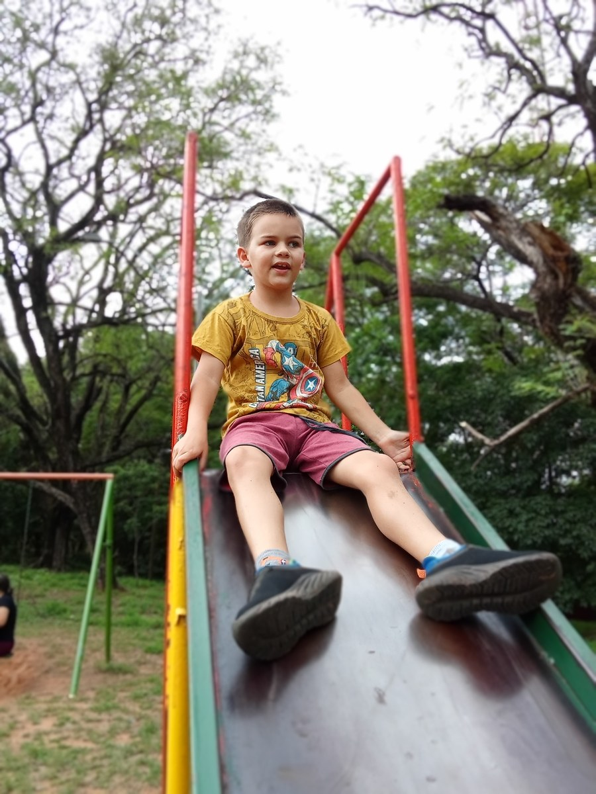

What Happens to Autistic Children in Paraguay When They Become Adults?
A practical handover plan for services, decisions, and everyday life.

Our days in Paraguay are relaxed and laid-back. That pace of life is a big part of the culture and a big part of why we chose to make our home here. Here is Sam enjoying the playground on one of our casual park days.
Autistic children in Paraguay grow into adults with different interests, strengths, relationships, and support needs. There is no single service pathway that this article can promise every family. Preparing for adulthood means checking what will continue, what will change, and what needs a new arrangement before an existing source of support ends.
The aim is not to make a young person manage everything alone. It is to support an adult life in which help remains available and the person’s choices matter. For some families, that includes planning for substantial lifelong assistance.
A birthday, the end of school, a change of clinician, and a change in legal arrangements may happen at different times. Treat them as separate transitions rather than assuming one appointment or document will settle all of them.
Begin with the person, not the paperwork
Start by asking what the young person enjoys, what they want more of, what they avoid, and who they trust. Use the communication methods that work for them. Notice preferences without assuming that every observation is certain or that today’s preference will remain unchanged.
Make room for ordinary adult aspirations: friendships, privacy, recreation, useful activities, a familiar neighborhood, or work when it is wanted and appropriately supported. Employment and independent living are not tests of whether someone deserves an adult life.
Then describe the practical help that makes those things possible. “Needs supervision” is less useful than explaining when assistance is needed, what the supporter does, and what happens if that help is delayed. Keep private health and care information in a secure planning record rather than a public story.
Check each service’s actual transition rules
Do not assume that every childhood service ends at 18, or that a familiar team automatically continues into adulthood. Ask each school, clinician, therapy service, or support organization for its own rules and referral process.
In April 2026, Paraguay’s Ministry of Health described autism across the lifespan while identifying the Acosta Ñu pediatric hospital as a national reference center for children and adolescents. That makes it especially important to ask about an adult referral rather than treating pediatric information as an adult-service directory. Read the Ministry’s statement.
For each current service, record:
- The date or condition under which the present arrangement changes.
- Whether an adult service has been identified and has confirmed that it can help.
- The referral, assessment, documentation, or appointment required.
- Who is responsible for arranging the handover.
- What happens if the next service is unavailable when the current one ends.
A referral sent is not the same as an appointment booked. An appointment booked is not proof that the service can meet every ongoing need. Keep those stages separate so the family can see what remains unresolved.
Understand adulthood and legal support together
Paraguay’s Law 2169 defines adulthood as beginning at 18. Families should get current local advice about the authority needed for adult decisions rather than assuming parental arrangements simply continue unchanged.
Law 7371/2025 presumes adult legal capacity and provides for tailored supports. A judicial order can include representation for specified legal acts. The law also retains an exceptional incapacity and curatorship route under a stringent individual test. Needing lifelong care does not itself determine which legal arrangement applies, and being nonspeaking does not automatically establish incapacity.
Ask a Paraguayan lawyer how the current rules apply to the actual decisions ahead: care agreements, healthcare, money, housing, and who can act if the usual supporter becomes unavailable. Bring concrete examples of the assistance needed. This article cannot determine what a judge would order or what authority a particular document provides.
Our general guide to what happens when a child with autism turns 18 may help organize questions, but any country-specific rules in a general article must not be imported into Paraguay.
Build a week beyond school
School can organize much more than lessons: transport, familiar people, meals, routine, and time when a parent can work or rest. When that structure changes, replacing only one activity may leave most of the week unplanned.
Draw a simple weekly calendar with the young person. Include meals, rest, outings, learning, relationships, healthcare, and the support needed for each. Leave space for downtime. A full timetable is not automatically a good life.
For each proposed activity, ask how the person will get there, who will help them participate, what it costs, and how they can leave or take a break. Visit where possible before relying on the arrangement. A program suitable for one adult may not suit another person’s communication, sensory, physical, or personal-care needs.
Why the end of school services can feel like a cliff explains the planning problem. The useful response is a coordinated handover, not pressure to make the adult fit any available program.
Plan for the family as well as the next appointment
Write down who currently holds the details: the person who knows the bus route, communicates with the clinic, notices a supply running low, or understands how a change in routine is usually handled. This knowledge is part of the support system even when it is unpaid and invisible.
Ask which tasks could be shared and whether the proposed helpers have actually agreed. A name on a list is not yet a dependable backup. Introductions, accessible information, practice, and realistic limits all matter.
Also distinguish a short interruption from a long-term change. Who could help for an afternoon? Who could handle several days? What would need a different arrangement altogether? These questions can be addressed gradually without deciding the person’s entire future at once.
What you can do this week
Choose one transition that is closest, not necessarily the most frightening. Request the exact end date or review date for the current arrangement and the steps needed for the next one.
Create a single page with three headings: “confirmed,” “waiting for an answer,” and “no plan yet.” Put a person and a follow-up date beside each unresolved item. Include the young person’s wishes alongside professional recommendations.
Finally, arrange one conversation about adult legal support with a qualified local adviser, or identify where to request that advice. Gathering questions is a useful step even if the consultation cannot happen immediately.
Planning without pretending the future is already built
Casa de SAM’s long-term goal is to develop a residential community in Paraguay for adults who need ongoing support, with a planned opening goal of 2035. It is still a future project, not an available adult service or an admissions pathway.
The transition into adulthood deserves attention now. A family’s next workable plan should rest on confirmed people and services, with room to change as the adult’s life develops. For housing questions, see our guide to adult autism housing in Paraguay.
This is general educational information, not individualized legal or medical advice. Confirm current requirements with qualified Paraguayan professionals and each service. Sources reviewed November 6, 2026.